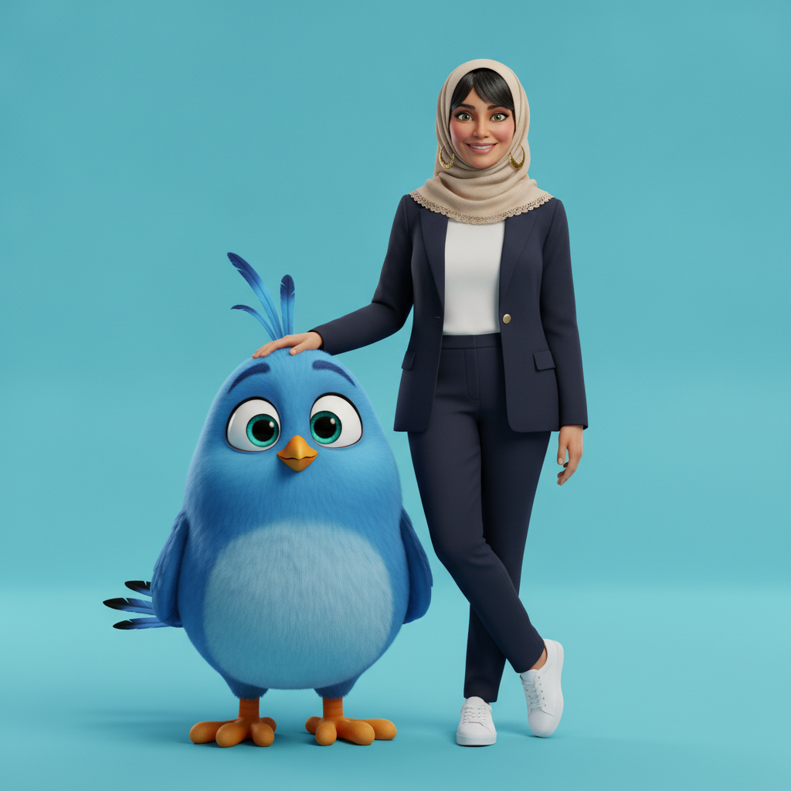

A lesson plan is only as complete as the request behind it.
Start with a game that puts the four letters of RCTF back together. Then list everything a perfect lesson plan needs, attach your school's own template and the pages of the book, and run one master prompt that writes the plan — as a Word file, or as a web page that exports its own PDF.
From the four letters you learned in Session 1 to a lesson plan you can hand to a colleague.
Session 1 gave you RCTF. Session 2 puts it to work on the task that takes the largest share of a teacher's week. Nothing new is added to the frame — the same four questions are simply asked about a lesson instead of a picture, and asked with far more detail, because a lesson plan has far more parts than a photograph.
We begin with a game, because a frame you can take apart is a frame you own. Twelve lines from one real, working prompt are shuffled into a pile; your job is to send each line home to R, C, T or F. Then we do the same thing in the opposite direction: we list what a lesson plan needs, and build the prompt out of that list.
What you will be able to do by the end
Read any prompt by its lettersTake a finished prompt apart and name which part is R, C, T and F.
Name what a plan needsSixteen ingredients, from the curriculum code to the page border.
Run one master promptOne editable RCTF prompt — ten fields, source-control rules and a twelve-point quality check.
Feed the AI your own documentsAttach your school's lesson-plan template and the pages of the student book.
Ship it two waysA Word file for the archive, and an editable web page that exports its own PDF.
Audit what comes backCheck the plan against your own request before it reaches a class.
The rule carried over from Session 1: the AI writes the draft, you approve it. A lesson plan produced here is a draft until a qualified teacher has read every line of it.
Part 1 · Send each line home
Twelve lines from one real prompt. Four letters. Five minutes.
The lines below all come from a single working prompt — the one that produced the course poster further down this page. They have been shuffled. Send each line to the letter whose question it answers: who the AI should be, what it must know, what it must do, or how the result must be delivered.
With a mouse: drag a line into a box. With a keyboard or a touch screen: select the line, then select the box. A line that lands in the wrong box will refuse and shake. The four boxes do not hold equal numbers — a real prompt never divides evenly.
Placed 0 of 12
Act as an expert professional portrait photographer and cinematic 3D character designer.A seamless cyan-blue studio background with a matching cyan-blue floor.Vertical portrait, aspect ratio 2:3, full-body framing, high resolution.Position the bird at the lower left and the woman on the right, standing slightly behind it.Exactly two subjects: an elegant middle-aged woman in a beige hijab and a navy blazer.Act as a photorealistic human artist and an advanced image-compositing specialist.Rest her left forearm across the top of the bird's head, with five relaxed fingers.A straight-on camera angle with a natural 50–70 mm portrait-lens appearance.A giant, friendly blue cartoon bird with two long crest feathers and a small orange beak.Render believable anatomy, high-quality materials, accurate lighting and flawless visual integration.No text, no logos, no watermark, no border, and no extra fingers or toes.Cross her legs casually at the ankles and let her smile confidently at the camera.
RRole · who it should be
CContext · what it must know
TTask · what it must do
FFormat · how it arrives
Why a poster and not a lesson? Because a picture shows you instantly whether the AI obeyed. A lesson plan hides its mistakes inside paragraphs; a picture puts them on the surface. Learn to read the frame here, then take the same eye to your lesson plans.
The whole prompt the twelve lines came from
This is a standalone prompt: it describes every visual detail in words and never refers to a reference photograph. It can rebuild the composition closely, but it cannot reproduce a real person's face without that person's photograph — a limit worth stating plainly to your teachers.
The course-poster prompt — English
The course-poster prompt — Arabic
What the prompt actually produced

The resultGenerated from the written prompt alone, with no photograph attached. The cyan-blue studio, the beige lace hijab, the navy blazer with gold buttons, the white trainers, the crossed ankles and the forearm resting on the bird's head all came from named lines in the prompt.
Now audit it — four instructions were not obeyed
This is the habit worth teaching. Read the picture against your own prompt, line by line, and write down what was ignored. Four things were ignored here, and none of them is the tool being broken — they are the ordinary behaviour of a system that weighs your words rather than executing them.
The aspect ratio came back square, not the 2:3 vertical the Format section asked for twice.
The woman is not photorealistic. The bird's 3D animation style spread across the whole picture and took her with it — the commonest failure when one prompt asks for two different styles at once.
The bird has more than the two crest feathers it was given, and its tail feathers are not the three plain black ones described.
The bird is waist-height, not the shoulder-height the Context section specified.
What to do about it. Move the ignored instruction to the very first line of the prompt and state it more forcefully; set the aspect ratio in the tool's own settings rather than only in words; and when you need two styles in one frame, generate them separately and combine them. Then run it again — a prompt is a draft too.
Part 2 · What does a perfect lesson plan need?
Before you write a single word of the prompt, answer this. Sixteen ingredients — and the AI can supply none of them.
This is the point of the whole session. A weak lesson-planning prompt is not weak because the teacher wrote it badly; it is weak because the teacher had not yet decided what a good plan contains. Decide first. The prompt is only the list, written down in order.
Grade, subject and standardGrade 6 · Arabic language, reading · IGCSE. Everything downstream depends on this line.
Lesson title and topic"An Adventure with Flashback" — adventure narrative and the treatment of time.
Duration and lesson typeNinety minutes, one period, student-centred rather than teacher-led.
Delivery mode and platformFace-to-face, online or blended — and if online, which platform. It changes every cooperative activity in the plan.
The teaching framework, stage by stageWarm-up · vocabulary · prediction · gist · specific information · detailed analysis · production · closure.
Objectives model and curriculum codesSMART objectives across all six Bloom levels, each tied to 6Rs.01 or 6Rs.02.
The DOK level of every activityRecall → Apply → Analyse → Create. Name the level in the procedures table and make the lesson climb the ladder, not sit on one rung.
The columns of the procedures tableStage · student actions · cooperative learning · differentiated activity · time in minutes.
How the comprehension questions map to the stagesQ1 gist · Q2a–c specific information · Q3–5 analysis and inference.
Formative assessmentPadlet, peer correction and instant polling — evidence gathered while the lesson runs.
Summative assessment and its criteriaA flashback paragraph judged on idea, inference, vocabulary and organisation.
Digital tools, matched to stagesPadlet · Mentimeter · Kahoot · Quizizz · Wordwall · Nearpod · Canva · Google Forms — each only where it serves the stage.
The AI tools, and the rules for themMagicSchool AI · Diffit for Teachers · Google Gemini · Claude. Say what each one is for, link it, and keep the safeguard: AI supports preparation and differentiation only — the book stays authoritative.
A closing Socratic exit ticketOne deep reflective question, built on the DOK ladder, linking the text to real life.
Language and typography rulesArabic, right-to-left, UTF-8, Arial, and every numeral in Arabic-Indic form.
Your school's own documentsThe official lesson-plan template and the pages of the student book. Without these the AI invents a text, invents questions, and hands you a plan that belongs to no school.
Where each ingredient sits in the frame
RCTF
English
العربية
R
Role — a certified Arabic teacher and instructional designer working to IGCSE standards.
الدور — معلم لغة عربية معتمد ومصمم تعليمي يعمل وفق معايير IGCSE.
C
Context — grade, subject, title, topic, duration, delivery mode and platform, the frameworks, the codes, the AI tools you own, and the two attached files.
Five instructions, then the master prompt. Fill in the highlighted fields and copy the whole thing into ChatGPT.
An AI that has not seen your school's template invents a template. One that has not seen the book invents the text and the questions to go with it. Attach both files first.
Open a new chat in ChatGPT and select the plus button beside the message box.
Attach your school's official lesson-plan template.
Attach the pages of the student book for this lesson. If the book is not a file, photograph each page straight on, in good light, with the whole page inside the frame.
Fill in the eleven highlighted fields below — select a field and type over it.
Copy the whole prompt and send it in the same message as the two attachments.
What makes this prompt strict. It has a set of source-control rules — copy the textbook questions exactly, never renumber them, never invent a "5d", stop and ask if an attachment is missing — and it ends with a twelve-point quality-control checklist the AI must run before it hands you the file. Those two blocks are what stop a convincing but invented lesson plan.
The master prompt — English
# RCTF MASTER PROMPT — INTEGRATED STUDENT-CENTRED LESSON PLAN
## R — ROLE
Act as:
* A certified English-language teacher working to Cambridge Primary/Lower Secondary and IGCSE standards.
* A professional instructional designer.
* An expert in student-centred reading instruction.
* A specialist in Bloom's Revised Taxonomy and Depth of Knowledge (DOK).
* An expert in mixed-ability differentiation, cooperative learning and assessment.
* A professional Microsoft Word document designer.
Produce a practical, academically rigorous lesson plan that can be used directly in the classroom.
Read every attachment completely before writing or designing anything.
## C — CONTEXT
The teacher will provide:
1. The school's official lesson-plan template.
2. The relevant student-book pages.
3. The following lesson information:
* Grade/Stage: Grade 6
* Subject: English — Reading
* Lesson title: An Adventure with Flashback
* Topic: adventure narrative and the treatment of time through flashback
* Duration: 90 minutes
* Class profile: mixed ability
* Curriculum codes: 6Rs.01 · 6Rs.02
* Previous learning: adventure stories, simple and compound sentences
* Required language: English
* Delivery mode: face-to-face (alternatives: online · blended)
### Source-control rules
* Read the school template and all student-book pages before writing.
* Reproduce the school template's essential headings, labels and required fields.
* Use only the supplied student-book text, vocabulary, examples and comprehension questions.
* Copy textbook questions exactly, preserving their numbering and wording.
* Do not invent, rewrite, simplify, paraphrase, split or renumber textbook questions.
* Do not create an additional question such as "5d" if it does not appear as a separate question in the book.
* Do not invent textual evidence, page content, quotations or answers.
* If an essential attachment is missing or unreadable, stop and request it.
* If the school template conflicts with these instructions, preserve the template's required administrative fields while following the integrated instructional structure below.
* Do not pre-complete the teacher's post-lesson reflection as if the lesson has already been delivered.
* Adapt every cooperative structure to the delivery mode named above: breakout rooms and a shared board if the lesson is online, seating and grouping if it is face-to-face.
## T — TASK
Create one complete, student-centred lesson plan using the following exact order and structure.
### 1. Document opening
Include:
* The school template title.
* Lesson title.
* A centred subtitle containing the grade, subject/topic and total duration.
* An introductory information table containing only:
* Class
* Date
* Lesson
* Previous learning
Do not place the learning objectives inside this introductory table.
### 2. Learning objectives
Place the complete learning-objectives section only once, immediately before the Plan.
Do not repeat the objectives anywhere else.
Create a three-column table:
| Bloom level | Learning objective | Code |
Write six SMART objectives covering:
1. Remember
2. Understand
3. Apply
4. Analyse
5. Evaluate
6. Create
Requirements:
* Begin each objective with a measurable outcome.
* Make every objective achievable within the lesson duration.
* Connect every objective to one of the supplied curriculum codes.
* Include measurable evidence such as accuracy, number of responses, textual evidence, word count or rubric score.
* Ensure that the objectives progress from lower-order to higher-order thinking.
### 3. Integrated Plan
Create one integrated Plan table. This must be the main instructional core of the document.
Use exactly five columns:
| Stage | Student actions / Planned activities | Cooperative learning | Differentiated activity | Time in minutes |
Include exactly eight stages:
1. Warm-up
2. Vocabulary teaching
3. Prediction
4. Gist reading
5. Specific information
6. Detailed reading analysis
7. Application and production
8. End/Close/Reflection/Summary
The time allocations must equal the total lesson duration exactly.
Write procedures from the students' perspective. Describe what students do, say, read, discuss, analyse, perform, write or reflect on — not a list of teacher actions.
Stage 1: Warm-up
Students should:
* Activate prior knowledge.
* Respond to a short hook or instant poll.
* Connect the lesson title, topic or image to previous learning.
Use a suitable strategy such as Think–Pair–Share.
Stage 2: Vocabulary teaching
Students should:
* Learn only vocabulary found in the supplied pages.
* Infer meanings from context before checking them.
* Match words to meanings.
* Use the words orally or in short contextual sentences.
Use mixed-attainment vocabulary groups or triads.
Stage 3: Prediction
Students should:
* Examine the supplied title, illustrations, cover or visible textual clues.
* Make evidence-based predictions.
* Explain each prediction using a visible clue.
Use Gallery Walk, Walk-and-Talk or Prediction–Evidence Pairs.
Stage 4: Gist reading
Students should:
* Read the supplied extract.
* Identify the main situation, main idea or narrative viewpoint.
* Complete the textbook's main-idea/gist question.
Insert the exact wording and number of the relevant textbook question directly inside this stage's "Student actions / Planned activities" cell.
Do not place it in a separate comprehension-question section.
Use paired reading, alternating reading, echo reading or another appropriate cooperative structure.
Stage 5: Specific information
Students should:
* Scan and reread the text.
* Answer the textbook's specific-information questions.
* Highlight or identify the exact evidence supporting each answer.
Insert the exact wording and numbering of all relevant specific-information questions directly inside this stage's "Student actions / Planned activities" cell.
Do not paraphrase or list these questions elsewhere.
Use Numbered Heads Together, reciprocal roles or another suitable cooperative strategy.
Stage 6: Detailed reading analysis
Students should:
* Answer the supplied analysis and inference questions.
* Analyse relevant structural or linguistic features.
* Find textual evidence.
* Explain the effect created by the writer.
* Evaluate the writer's success when required by the textbook.
Insert the exact wording and numbering of all relevant analysis and inference questions directly inside this stage's "Student actions / Planned activities" cell.
Use Jigsaw Expert Groups:
* Assign different questions or features to expert groups.
* Let experts analyse their assigned focus.
* Return experts to their home groups to teach their findings.
Stage 7: Application and production
Students should:
* Complete the textbook's application or production questions.
* Participate in an appropriate speaking or performance task.
* Produce the required oral or written response.
* Apply the lesson's vocabulary, structure, viewpoint or language features.
Insert the exact wording and numbering of all relevant application and production questions directly inside this stage's "Student actions / Planned activities" cell.
Use Hot-Seating, role-play, oral summary, peer rehearsal or another appropriate production strategy.
Include peer feedback using a structure such as "Two Stars and a Wish".
Stage 8: End/Close/Reflection/Summary
Integrate the entire closure into this final Plan row.
Do not create a separate Closure section after the Plan.
Include four DOK-aligned exit-ticket prompts inside the "Student actions / Planned activities" cell:
* DOK 1 — Recall
* DOK 2 — Skill/Concept
* DOK 3 — Strategic Thinking
* DOK 4 — Extended Thinking
End the cell with one deep Socratic reflective question that connects:
* The text's central idea.
* The lesson's treatment of time, structure or perspective.
* The learner's real life, experiences, decisions or judgement of others.
Students must first commit to an individual response and may then discuss it through a Socratic Pair-Share or Reflective Circle.
Do not repeat the DOK prompts or Socratic question in a separate section.
### 4. Differentiation inside the Plan
Every Plan row must contain a different differentiated activity.
Use the following three-tier structure explicitly:
* Support: scaffolds such as visual cues, audio support, highlighted text, sentence stems, vocabulary cards, evidence banks or guided charts.
* Core: the expected grade-level task.
* Extension: deeper inference, evaluation, comparison, alternative writing, structural analysis or independent creation.
Do not use the same differentiation in every stage.
Differentiation must respond to the actual demands of that stage.
### 5. Student success criteria
After the integrated Plan, add a concise two-column table:
| Success criterion | Evidence of success |
Begin the criterion with: I can…
Include evidence that learners can:
* Identify the main idea or viewpoint.
* Support answers with exact textual evidence.
* Explain the effect of structural or language choices.
* Understand the treatment of time.
* Participate in the lesson's cooperative production task.
* Create the required written or oral response.
### 6. Assessment
Create an Assessment section with two subsections.
Formative assessment
Include only assessment methods that genuinely support the Plan, such as:
* Padlet evidence posts.
* Peer correction.
* Instant polling.
* Cooperative questioning.
* Teacher observation.
* Immediate digital feedback.
Explain where each method occurs and what evidence it collects.
Summative assessment
Create a short written task aligned with the lesson's highest-level objective and the supplied textbook task.
State:
* Required perspective or text type.
* Expected length.
* Required lesson features.
* Required vocabulary or sentence structures.
* Expected organisation.
Create a 16-mark analytic rubric with exactly five columns:
| Criterion | 4 — Exceeding | 3 — Meeting | 2 — Developing | 1 — Needs support |
Use four criteria:
1. Idea and task integration
2. Inference and perspective
3. Vocabulary and sentence structure
4. Organisation and flow
Write specific performance descriptors for every level.
Add these performance bands:
* 13–16: Exceeding/Secure
* 9–12: Meeting/Developing securely
* 5–8: Emerging
* 0–4: Substantial support needed
### 7. AI and interactive digital tools
Create a four-column table:
| Stage | Tool (active link) | Type of activity | Purpose |
Choose tools only where they genuinely improve the stage.
Select from:
* Mentimeter
* Wordwall
* Nearpod
* Padlet
* Quizizz
* Kahoot
* Canva
* Google Forms
Requirements:
* Use the official website for every tool.
* Make the tool name a real clickable hyperlink in the Word document.
* State the specific classroom activity.
* State the instructional or assessment purpose.
* Do not include a tool merely to increase the number of technologies.
* Ensure that digital tools support rather than replace reading, discussion and textual analysis.
* Include the Stage 8 digital exit-ticket tool in this table only; do not recreate the closure questions outside the Plan.
### 8. Recommended teacher AI tools
Create a two-column table:
| AI tool (active link) | Best use in this lesson |
Include suitable teacher-support tools such as:
* MagicSchool AI
* Diffit for Teachers
* Google Gemini
* Claude
Make every tool name a clickable link to its official website.
Explain how each tool could support:
* Differentiation.
* Vocabulary scaffolding.
* Model responses.
* DOK-aligned prompts.
* Rubric-supported feedback.
* Sentence-building support.
Add this safeguard beneath the table:
Teacher safeguard: AI tools support preparation and differentiation only. The supplied textbook extract and questions remain authoritative and must not be rewritten or replaced.
### 9. Reflection
Preserve the school template's Reflection section.
Include the template's original reflective questions.
Do not supply model answers or claim that particular activities succeeded.
The reflection must remain available for the teacher to complete after delivering the lesson.
### 10. Next steps
Preserve the school template's Next Steps heading and its original guiding question.
Leave the response open for the teacher to complete after reviewing learner performance.
Do not create a separate closure or comprehension-question section before this point.
## F — FORMAT
Deliver one editable Microsoft Word document in .docx format.
Page and typography
* Page size: A4 portrait.
* Encoding: UTF-8.
* Body font: Arial.
* Body colour: charcoal #111111.
* Main body size: 14 pt.
* Plan-table text may be reduced slightly, when necessary, to fit exact textbook questions legibly.
* Title: 22 pt, bold, centred, dark navy #0A2A66.
* Subtitle: 16 pt, centred.
* Section headings: 18 pt, bold, dark navy #0A2A66.
* Subsection headings: 15–16 pt, bold, dark navy.
* Place a dark navy divider beneath major section headings.
* Add a dark navy page frame around every page.
* Include a centred page-number footer.
Tables
* Every table must have a visible named header row.
* Header-row fill: light grey #DDDDDD.
* Header text: bold dark navy #0A2A66.
* Table borders: dark navy #0A2A66, approximately 1.5 pt.
* Do not use extremely thick borders.
* Use consistent cell padding and vertical alignment.
* Allow rows to expand naturally.
* Do not clip, overlap or truncate text.
* Repeat table headers across pages when a table continues.
* Keep each instructional stage together whenever possible.
* Use alternating row fills: light grey #F2F2F2 and slightly darker grey #E6E6E6.
* Use alternating light-blue shades where appropriate for digital-tool tables.
Structural prohibitions
The document must not contain:
* A repeated learning-objectives section.
* Learning objectives inside both the opening table and a second table.
* A standalone "Comprehension Questions" section.
* A standalone question-mapping table.
* A standalone "Closure" section.
* A separate DOK table after the Plan.
* Reworded or invented textbook questions.
* Pre-completed post-lesson reflections.
* Decorative borders so thick that they dominate the page.
* Unlinked tool names when official hyperlinks are requested.
Quality-control checklist
Before delivering the document:
1. Confirm that the objectives appear only once and immediately before the Plan.
2. Confirm that the eight Plan stages total exactly the stated lesson duration.
3. Confirm that every textbook question appears exactly once inside its relevant Plan row.
4. Confirm that all DOK and Socratic closure prompts appear only inside Stage 8.
5. Confirm that the Plan is written from the students' perspective.
6. Confirm that every stage has a distinct cooperative strategy or participation structure.
7. Confirm that every stage contains Support, Core and Extension differentiation.
8. Confirm that every interactive and AI tool name is a working clickable hyperlink.
9. Confirm that the Reflection and Next Steps sections follow the school template.
10. Render the Word document and visually inspect every page.
11. Correct all clipping, row splitting, overlap, orphaned text, inconsistent borders and unnecessary blank pages.
12. Deliver only the final verified .docx.
The master prompt — Arabic
# أمر RCTF الرئيسي — خطة درس متكاملة متمركزة حول الطالب
## R — الدور
تصرَّف بصفتك:
* معلِّم اللغة الإنجليزية معتمدًا يعمل وفق معايير كامبريدج للمرحلتين الابتدائية والمتوسطة الدنيا ومعايير IGCSE.
* مصمِّمًا تعليميًا محترفًا.
* خبيرًا في التدريس القرائي المتمركز حول الطالب.
* متخصصًا في تصنيف بلوم المعدَّل ومستويات عمق المعرفة DOK.
* خبيرًا في تمايز الفصول متعددة المستويات، والتعلم التعاوني، والتقويم.
* مصمِّم مستندات Microsoft Word محترفًا.
أنتج خطة درس عملية ورصينة أكاديميًا يمكن استخدامها مباشرة داخل الفصل.
واقرأ كل مرفق قراءة كاملة قبل أن تكتب أو تصمِّم أي شيء.
## C — السياق
سيوفِّر المعلم:
1. نموذج إعداد الدرس الرسمي في المدرسة.
2. صفحات كتاب الطالب ذات الصلة.
3. معلومات الدرس التالية:
* الصف / المرحلة: الصف السادس
* المادة: اللغة الإنجليزية — قراءة
* عنوان الدرس: مغامرة مع الفلاش باك
* الموضوع: السرد المغامر ومعالجة الزمن عبر الاسترجاع الزمني
* المدة: ٩٠ دقيقة
* وصف الفصل: فصل متعدد المستويات
* الأكواد المنهجية: 6Rs.01 · 6Rs.02
* التعلم السابق: قصص المغامرة، والجمل البسيطة والمركبة
* لغة الكتابة المطلوبة: الإنجليزية
* نمط التقديم: حضوري (البدائل: عن بُعد · مدمج)
### قواعد ضبط المصادر
* اقرأ نموذج المدرسة وكل صفحات كتاب الطالب قبل الكتابة.
* أعِد إنتاج عناوين النموذج الأساسية ومسمياته وحقوله المطلوبة.
* لا تستخدم إلا نص كتاب الطالب المرفق ومفرداته وأمثلته وأسئلة الفهم الواردة فيه.
* انسخ أسئلة الكتاب حرفيًا مع الحفاظ على ترقيمها وصياغتها.
* لا تخترع أسئلة الكتاب ولا تعيد كتابتها ولا تبسِّطها ولا تعيد صياغتها ولا تجزّئها ولا تعيد ترقيمها.
* لا تنشئ سؤالًا إضافيًا مثل «5د» إن لم يرد سؤالًا مستقلًا في الكتاب.
* لا تخترع شواهد نصية ولا محتوى صفحات ولا اقتباسات ولا إجابات.
* إذا كان مرفق أساسي مفقودًا أو غير مقروء، فتوقّف واطلبه.
* إذا تعارض نموذج المدرسة مع هذه التعليمات، فاحتفظ بالحقول الإدارية المطلوبة في النموذج مع الالتزام بالهيكل التدريسي المتكامل أدناه.
* لا تملأ خانة التأمل البَعدي للمعلم مسبقًا كأن الدرس قد نُفِّذ بالفعل.
* كيِّف كل بنية تعاونية بحسب نمط التقديم المذكور أعلاه: غرف فرعية ولوح مشترك إن كان الدرس عن بُعد، وشكل جلوس وتوزيع مجموعات إن كان حضوريًا.
## T — المهمة
أنشئ خطة درس واحدة كاملة متمركزة حول الطالب، بالترتيب والهيكل التاليين بالضبط.
### ١. مطلع المستند
تضمَّن:
* عنوان نموذج المدرسة.
* عنوان الدرس.
* عنوانًا فرعيًا في الوسط يحوي الصف والمادة أو الموضوع والمدة الكلية.
* جدول معلومات تمهيديًا يحتوي فقط على:
* الفصل
* التاريخ
* الدرس
* التعلم السابق
ولا تضع الأهداف التعليمية داخل هذا الجدول التمهيدي.
### ٢. الأهداف التعليمية
ضع قسم الأهداف التعليمية كاملًا مرة واحدة فقط، مباشرة قبل جدول الخطة.
ولا تكرر الأهداف في أي موضع آخر.
أنشئ جدولًا من ثلاثة أعمدة:
| مستوى بلوم | الهدف التعليمي | الكود |
واكتب ستة أهداف وفق معايير SMART تغطي:
١. التذكر
٢. الفهم
٣. التطبيق
٤. التحليل
٥. التقويم
٦. الإبداع
المتطلبات:
* ابدأ كل هدف بنتيجة قابلة للقياس.
* اجعل كل هدف قابلًا للتحقق داخل مدة الدرس.
* اربط كل هدف بأحد الأكواد المنهجية المعطاة.
* ضمِّن شاهدًا قابلًا للقياس مثل نسبة الدقة أو عدد الاستجابات أو الشاهد النصي أو عدد الكلمات أو درجة السلم التقديري.
* تأكد من تدرج الأهداف من مهارات التفكير الدنيا إلى العليا.
### ٣. جدول الخطة المتكامل
أنشئ جدول خطة واحدًا متكاملًا يكون هو القلب التدريسي للمستند.
واستخدم خمسة أعمدة بالضبط:
| المرحلة | إجراءات الطلاب / الأنشطة المخططة | التعلم التعاوني | النشاط التفريقي | الزمن بالدقائق |
وتضمَّن ثماني مراحل بالضبط:
١. التهيئة
٢. تدريس المفردات
٣. التنبؤ
٤. القراءة للفكرة العامة
٥. المعلومات المحددة
٦. التحليل القرائي التفصيلي
٧. التطبيق والإنتاج
٨. الإنهاء / الإغلاق / التأمل / التلخيص
ويجب أن يساوي مجموع الأزمنة مدة الدرس الكلية بالضبط.
واكتب الإجراءات من منظور الطالب: صِف ما يفعله الطلاب ويقولونه ويقرأونه ويناقشونه ويحللونه ويؤدونه ويكتبونه ويتأملون فيه — لا قائمة بأفعال المعلم.
المرحلة ١: التهيئة
على الطلاب أن:
* ينشّطوا معرفتهم السابقة.
* يستجيبوا لمثير قصير أو تصويت فوري.
* يربطوا عنوان الدرس أو موضوعه أو صورته بالتعلم السابق.
واستخدم استراتيجية مناسبة مثل فكِّر – زاوج – شارك.
المرحلة ٢: تدريس المفردات
على الطلاب أن:
* يتعلموا المفردات الواردة في الصفحات المرفقة فقط.
* يستنتجوا المعاني من السياق قبل التحقق منها.
* يطابقوا الكلمات بمعانيها.
* يستخدموا الكلمات شفهيًا أو في جمل سياقية قصيرة.
واستخدم مجموعات مفردات متعددة المستويات أو ثلاثيات.
المرحلة ٣: التنبؤ
على الطلاب أن:
* يفحصوا العنوان والرسوم والغلاف أو القرائن النصية الظاهرة في المرفقات.
* يضعوا تنبؤات مبنية على شواهد.
* يعللوا كل تنبؤ بقرينة ظاهرة.
واستخدم جولة المعرض، أو المشي والحديث، أو أزواج التنبؤ والشاهد.
المرحلة ٤: القراءة للفكرة العامة
على الطلاب أن:
* يقرأوا المقتطف المرفق.
* يحددوا الموقف الرئيسي أو الفكرة العامة أو وجهة نظر السرد.
* يجيبوا عن سؤال الفكرة العامة الوارد في الكتاب.
وأدرج نص السؤال المعني ورقمه كما وردا في الكتاب حرفيًا داخل خلية «إجراءات الطلاب / الأنشطة المخططة» لهذه المرحلة.
ولا تضعه في قسم مستقل لأسئلة الفهم.
واستخدم القراءة الثنائية أو المتناوبة أو الترديدية أو بنية تعاونية مناسبة أخرى.
المرحلة ٥: المعلومات المحددة
على الطلاب أن:
* يمسحوا النص بصريًا ويعيدوا قراءته.
* يجيبوا عن أسئلة المعلومات المحددة الواردة في الكتاب.
* يظللوا أو يحددوا الشاهد الدقيق الداعم لكل إجابة.
وأدرج نصوص جميع أسئلة المعلومات المحددة وأرقامها حرفيًا داخل خلية «إجراءات الطلاب / الأنشطة المخططة» لهذه المرحلة.
ولا تعِد صياغة هذه الأسئلة ولا تسردها في موضع آخر.
واستخدم الرؤوس المرقمة معًا، أو الأدوار التبادلية، أو استراتيجية تعاونية مناسبة أخرى.
المرحلة ٦: التحليل القرائي التفصيلي
على الطلاب أن:
* يجيبوا عن أسئلة التحليل والاستنتاج المرفقة.
* يحللوا الخصائص البنائية أو اللغوية ذات الصلة.
* يجدوا الشواهد النصية.
* يفسروا الأثر الذي أحدثه الكاتب.
* يقيّموا نجاح الكاتب حين يطلب الكتاب ذلك.
وأدرج نصوص جميع أسئلة التحليل والاستنتاج وأرقامها حرفيًا داخل خلية «إجراءات الطلاب / الأنشطة المخططة» لهذه المرحلة.
واستخدم مجموعات الخبراء (Jigsaw):
* أسنِد أسئلة أو خصائص مختلفة إلى مجموعات الخبراء.
* دع كل مجموعة تحلل محورها المسند إليها.
* أعِد الخبراء إلى مجموعاتهم الأصلية ليعلّموا زملاءهم ما توصلوا إليه.
المرحلة ٧: التطبيق والإنتاج
على الطلاب أن:
* يجيبوا عن أسئلة التطبيق والإنتاج الواردة في الكتاب.
* يشاركوا في مهمة تحدث أو أداء مناسبة.
* ينتجوا الاستجابة الشفهية أو الكتابية المطلوبة.
* يوظفوا مفردات الدرس أو بنيته أو وجهة نظره أو خصائصه اللغوية.
وأدرج نصوص جميع أسئلة التطبيق والإنتاج وأرقامها حرفيًا داخل خلية «إجراءات الطلاب / الأنشطة المخططة» لهذه المرحلة.
واستخدم الكرسي الساخن، أو لعب الأدوار، أو التلخيص الشفهي، أو التدريب مع الأقران، أو استراتيجية إنتاج مناسبة أخرى.
وتضمَّن تغذية راجعة من الأقران ببنية مثل «نجمتان وأمنية».
المرحلة ٨: الإنهاء / الإغلاق / التأمل / التلخيص
ادمج الإغلاق كله داخل صف الخطة الأخير هذا.
ولا تنشئ قسم إغلاق مستقلًا بعد الجدول.
وتضمَّن أربعة مثيرات لبطاقة الخروج متوائمة مع مستويات DOK داخل خلية «إجراءات الطلاب / الأنشطة المخططة»:
* DOK 1 — التذكر
* DOK 2 — المهارة والمفهوم
* DOK 3 — التفكير الاستراتيجي
* DOK 4 — التفكير الممتد
واختم الخلية بسؤال تأملي سقراطي عميق واحد يربط بين:
* الفكرة المحورية للنص.
* معالجة الدرس للزمن أو البنية أو وجهة النظر.
* حياة المتعلم الواقعية وخبراته وقراراته وأحكامه على الآخرين.
وعلى الطلاب أن يلتزموا أولًا باستجابة فردية، ثم لهم أن يناقشوها في مزاوجة سقراطية أو حلقة تأملية.
ولا تكرر مثيرات DOK ولا السؤال السقراطي في قسم منفصل.
### ٤. التمايز داخل جدول الخطة
يجب أن يحتوي كل صف من صفوف الخطة على نشاط تفريقي مختلف.
واستخدم البنية الثلاثية التالية صراحةً:
* الدعم: سقالات مثل القرائن البصرية، والدعم الصوتي، والنص المظلَّل، وبدايات الجمل، وبطاقات المفردات، وبنوك الشواهد، والمخططات الموجَّهة.
* الأساسي: المهمة المتوقعة في مستوى الصف.
* الإثراء: استنتاج أعمق، أو تقويم، أو مقارنة، أو كتابة بديلة، أو تحليل بنائي، أو إنتاج مستقل.
ولا تستخدم التمايز نفسه في كل مرحلة.
ويجب أن يستجيب التمايز لمتطلبات تلك المرحلة تحديدًا.
### ٥. معايير نجاح الطالب
بعد جدول الخطة المتكامل، أضف جدولًا موجزًا من عمودين:
| معيار النجاح | شاهد تحقق النجاح |
وابدأ كل معيار بصيغة: أستطيع أن…
وتضمَّن شواهد على أن المتعلم يستطيع:
* تحديد الفكرة العامة أو وجهة النظر.
* دعم إجاباته بشاهد نصي دقيق.
* تفسير أثر الاختيارات البنائية أو اللغوية.
* فهم معالجة الزمن.
* المشاركة في مهمة الإنتاج التعاونية في الدرس.
* إنتاج الاستجابة الكتابية أو الشفهية المطلوبة.
### ٦. التقويم
أنشئ قسم تقويم من قسمين فرعيين.
التقويم البنائي
لا تدرج إلا أساليب تخدم الخطة فعلًا، مثل:
* منشورات الشواهد على بادليت.
* تصحيح الأقران.
* التصويت الفوري.
* التساؤل التعاوني.
* ملاحظة المعلم.
* التغذية الراجعة الرقمية الفورية.
واشرح أين يقع كل أسلوب وما الشاهد الذي يجمعه.
التقويم الختامي
أنشئ مهمة كتابية قصيرة متوائمة مع أعلى أهداف الدرس ومع مهمة الكتاب المرفقة.
وحدِّد:
* وجهة النظر أو نوع النص المطلوب.
* الطول المتوقع.
* خصائص الدرس المطلوب توظيفها.
* المفردات أو التراكيب المطلوبة.
* التنظيم المتوقع.
وأنشئ سلمًا تقديريًا تحليليًا من ١٦ درجة بخمسة أعمدة بالضبط:
| المعيار | ٤ — يفوق التوقعات | ٣ — يحقق التوقعات | ٢ — في طور النمو | ١ — يحتاج دعمًا |
واستخدم أربعة معايير:
١. الفكرة وتكامل المهمة
٢. الاستنتاج ووجهة النظر
٣. المفردات وبنية الجملة
٤. التنظيم والانسياب
واكتب واصفات أداء محددة لكل مستوى.
وأضف نطاقات الأداء التالية:
* ١٣–١٦: يفوق التوقعات / متمكن
* ٩–١٢: يحقق التوقعات / ينمو بثبات
* ٥–٨: ناشئ
* ٠–٤: يحتاج دعمًا كبيرًا
### ٧. الأدوات الرقمية التفاعلية وأدوات الذكاء الاصطناعي
أنشئ جدولًا من أربعة أعمدة:
| المرحلة | الأداة (برابط فعّال) | نوع النشاط | الهدف |
ولا تختر أداة إلا حيث تحسّن المرحلة فعلًا.
واختر من:
* Mentimeter
* Wordwall
* Nearpod
* Padlet
* Quizizz
* Kahoot
* Canva
* Google Forms
المتطلبات:
* استخدم الموقع الرسمي لكل أداة.
* اجعل اسم الأداة رابطًا تشعبيًا فعّالًا قابلًا للنقر داخل مستند Word.
* حدِّد النشاط الصفي بدقة.
* حدِّد الهدف التدريسي أو التقويمي.
* لا تدرج أداة لمجرد زيادة عدد التقنيات.
* تأكد من أن الأدوات الرقمية تدعم القراءة والنقاش والتحليل النصي ولا تحل محلها.
* أدرج أداة بطاقة الخروج الرقمية الخاصة بالمرحلة الثامنة في هذا الجدول فقط، ولا تعِد إنشاء أسئلة الإغلاق خارج جدول الخطة.
### ٨. أدوات الذكاء الاصطناعي الموصى بها للمعلم
أنشئ جدولًا من عمودين:
| أداة الذكاء الاصطناعي (برابط فعّال) | أفضل استخدام لها في هذا الدرس |
وتضمَّن أدوات دعم المعلم المناسبة مثل:
* MagicSchool AI
* Diffit for Teachers
* Google Gemini
* Claude
واجعل اسم كل أداة رابطًا قابلًا للنقر إلى موقعها الرسمي.
واشرح كيف تدعم كل أداة:
* التمايز.
* سقالات المفردات.
* الاستجابات النموذجية.
* المثيرات المتوائمة مع مستويات DOK.
* التغذية الراجعة المستندة إلى السلم التقديري.
* دعم بناء الجملة.
وأضف هذا الضابط أسفل الجدول:
ضابط المعلم: أدوات الذكاء الاصطناعي تدعم التحضير والتمايز فقط. ويبقى مقتطف الكتاب المرفق وأسئلته هما المرجع، ولا يجوز إعادة كتابتهما أو استبدالهما.
### ٩. التأمل
احتفظ بقسم التأمل الوارد في نموذج المدرسة.
وتضمَّن أسئلة التأمل الأصلية في النموذج.
ولا تقدم إجابات نموذجية ولا تدّعِ أن أنشطة بعينها قد نجحت.
ويجب أن يبقى قسم التأمل متاحًا ليملأه المعلم بعد تنفيذ الدرس.
### ١٠. الخطوات التالية
احتفظ بعنوان «الخطوات التالية» في نموذج المدرسة وبسؤاله الموجِّه الأصلي.
واترك الإجابة مفتوحة ليكملها المعلم بعد مراجعة أداء المتعلمين.
ولا تنشئ قسم إغلاق مستقلًا ولا قسم أسئلة فهم مستقلًا قبل هذه النقطة.
## F — التنسيق
سلِّم مستند Microsoft Word واحدًا قابلًا للتعديل بصيغة .docx.
الصفحة والإخراج الطباعي
* مقاس الصفحة: A4 عمودي.
* الترميز: UTF-8.
* خط المتن: Arial.
* لون المتن: فحمي #111111.
* مقاس المتن الأساسي: ١٤.
* يجوز تصغير نص جدول الخطة قليلًا عند الضرورة لتظهر أسئلة الكتاب كاملة وواضحة.
* العنوان الرئيسي: ٢٢ عريض في الوسط بالأزرق الداكن #0A2A66.
* العنوان الفرعي: ١٦ في الوسط.
* عناوين الأقسام: ١٨ عريض بالأزرق الداكن #0A2A66.
* عناوين الأقسام الفرعية: ١٥–١٦ عريض بالأزرق الداكن.
* ضع فاصلًا بالأزرق الداكن أسفل عناوين الأقسام الرئيسية.
* أضف إطار صفحة بالأزرق الداكن حول كل صفحة.
* أضف تذييلًا في الوسط يحمل رقم الصفحة.
الجداول
* لكل جدول صف عناوين ظاهر ومسمّى.
* تعبئة صف العناوين: رمادي فاتح #DDDDDD.
* نص العناوين: عريض بالأزرق الداكن #0A2A66.
* حدود الجداول: أزرق داكن #0A2A66 بسمك ١٫٥ نقطة تقريبًا.
* لا تستخدم حدودًا شديدة السماكة.
* استخدم حشوًا داخليًا ومحاذاة رأسية متسقة.
* اسمح للصفوف بالتمدد طبيعيًا.
* لا تقتطع النص ولا تجعله متداخلًا أو مبتورًا.
* كرِّر صف العناوين عبر الصفحات حين يمتد الجدول.
* أبقِ كل مرحلة تدريسية في صفحة واحدة كلما أمكن.
* استخدم تعبئة صفوف متناوبة: رمادي فاتح #F2F2F2 ورمادي أغمق قليلًا #E6E6E6.
* استخدم درجات زرقاء فاتحة متناوبة حيث يناسب ذلك جداول الأدوات الرقمية.
محظورات هيكلية
يجب ألا يحتوي المستند على:
* قسم أهداف تعليمية مكرر.
* أهداف تعليمية داخل الجدول التمهيدي وجدول ثانٍ معًا.
* قسم مستقل باسم «أسئلة الفهم».
* جدول مستقل لربط الأسئلة بالمراحل.
* قسم مستقل باسم «الإغلاق».
* جدول DOK منفصل بعد جدول الخطة.
* أسئلة كتاب معادة الصياغة أو مخترعة.
* تأملات بَعدية مملوءة مسبقًا.
* حدودًا زخرفية سميكة تطغى على الصفحة.
* أسماء أدوات بلا روابط حين تُطلب الروابط الرسمية.
قائمة ضبط الجودة
قبل تسليم المستند:
١. تأكد من ظهور الأهداف مرة واحدة فقط ومباشرة قبل جدول الخطة.
٢. تأكد من أن مجموع أزمنة المراحل الثماني يساوي مدة الدرس المعلنة بالضبط.
٣. تأكد من ظهور كل سؤال من أسئلة الكتاب مرة واحدة بالضبط داخل صف الخطة المعني به.
٤. تأكد من ظهور جميع مثيرات DOK والسؤال السقراطي داخل المرحلة الثامنة فقط.
٥. تأكد من أن جدول الخطة مكتوب من منظور الطالب.
٦. تأكد من أن لكل مرحلة استراتيجية تعاونية أو بنية مشاركة مميزة.
٧. تأكد من احتواء كل مرحلة على تمايز بمستويات الدعم والأساسي والإثراء.
٨. تأكد من أن كل اسم أداة تفاعلية أو أداة ذكاء اصطناعي رابط فعّال قابل للنقر.
٩. تأكد من أن قسمي التأمل والخطوات التالية يتبعان نموذج المدرسة.
١٠. اعرض مستند Word وافحص كل صفحة بصريًا.
١١. صحِّح كل اقتطاع أو انقسام صفوف أو تداخل أو نص يتيم أو حدود غير متسقة أو صفحات فارغة زائدة.
١٢. سلِّم الملف النهائي .docx بعد التحقق فقط.
Only the highlighted fields change. The eight stages, the six Bloom objectives, the three-tier differentiation, the sixteen-mark rubric, the colours and the page frame stay the same for every lesson you ever plan. Hand this prompt to your teachers as it is.
Part 4 · Turn the same plan into an interactive page
One more prompt, for Gemini. It returns a single web page a teacher can edit in the browser and export as a clean PDF.
A Word file is right for the school archive. A web page is better in the room: a teacher can click any cell, correct it live, and export a PDF without opening Word at all. The prompt below asks Gemini for one self-contained HTML file — the same eight stages, the same rubric, the same navy-and-grey house style — with an edit toggle, a download button and print rules that stop the tables being cut in half.
Run the master prompt in Part 3 first and read the plan it returns. This prompt builds the page, not the pedagogy.
Paste this into Gemini and attach the finished plan, so the page carries your real questions and timings rather than the example ones.
This one stays in English: it is a build specification full of colour codes, class names and JavaScript. Translating it would break the file it produces — but the page it builds can hold Arabic content.
Save the file Gemini gives you and open it in any browser. Nothing needs installing.
The interactive-page prompt — for Gemini
Change the lesson, not the specification. Sections 1, 2, 4 and 5 of that prompt are build rules — the library, the control bar, the palette, the PDF settings. Only section 3 describes this particular lesson. Replace section 3 with your own stages, questions and timings and the same machinery rebuilds around them.
Part 5 · Audit the plan before it reaches a class
The prompt asks the AI to run its own checklist. Run yours too — these are the ones that catch a plan you cannot submit.
Do the eight stage timings add up to exactly the duration you asked for?
Do the objectives appear once only, immediately before the Plan, with all six Bloom levels and a code each?
Is every textbook question word-for-word from your pages, with its original number, sitting inside the right Plan row — and no invented extra question?
Are the DOK 1–4 prompts and the Socratic question inside Stage 8 only, with no separate closure or DOK table after the Plan?
Is the Plan written from the student's side? "The teacher explains" is not a student action.
Does every row carry a different Support / Core / Extension set, and a different cooperative structure?
Is every tool name a working link, and is each tool genuinely doing something in its stage?
Are the Reflection and Next Steps sections left empty for you to complete after teaching — not pre-filled as if the lesson had already happened?
Take this into Session 3: the exam you build next week must measure the learning you planned today. Keep the objectives and the book pages of this lesson to hand — the exam is written from those, not from the plan itself.
Apps used in this session
Two AI assistants that read attached files, the AI tools you name in the prompt, and the classroom tools the plan assigns to stages.
External tool
ChatGPT
Use it to run the master prompt with your two files attached. It reads Word documents, PDFs and photographs of book pages, and returns the plan as a document you can download.
Run the same prompt with the same two files in a second system and compare the two plans. Gemini often handles long Arabic documents and photographed pages differently — the differences are worth showing your teachers.
MagicSchool AI · Diffit for Teachers · Google Gemini · Claude — the four the master prompt asks for by name. These are teacher-facing: they differentiate a text, scaffold vocabulary, draft model responses and build DOK-aligned prompts. The prompt requires every one of them to appear as a working link with the safeguard beneath the table.
Padlet · Mentimeter · Kahoot · Quizizz · Wordwall · Nearpod · Canva · Google Forms. The plan assigns each one to a stage; open the ones you do not already use and check the activity actually exists before the lesson.
Order of use: play the game in Part 1, read the sixteen ingredients in Part 2, then attach your two files and run the master prompt from Part 3. Rebuild the plan as a web page with Part 4 if you want one, and finish with the eight checks in Part 5 before it reaches a class.